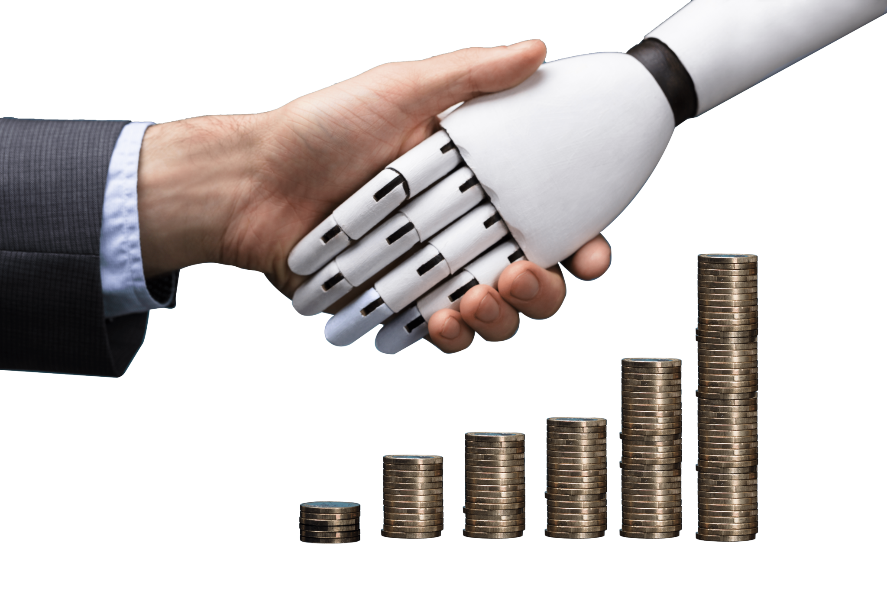
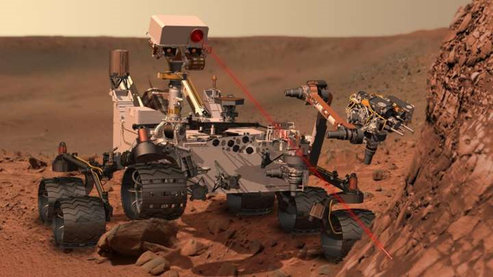

Marketing is a way to sugar coat your products to attract more customers. We, humans, are pretty good at sugar coating, but what if an algorithm or a bot is built solely for the purpose of marketing a brand or a company? It would do a pretty awesome job!

One reason why we’re all obsessed with Netflix and chill is because, Netflix provides highly accurate predictive technology based on customer’s reactions to films. It examines millions of records to suggest shows and films that you might like based on your previous actions and choices of films. As the data set grows, this technology is getting smarter and smarter every day.
With the growing advancement in AI, in the near future, it may be possible for consumers on the web to buy products by snapping a photo of it. Companies like CamFind and their competitors are experimenting this already.
AI in banking is growing faster than you thought! A lot of banks have already adopted AI-based systems to provide customer support, detect anomalies and credit card frauds. An example of this is HDFC Bank.
Since its launch, Eva has addressed over 3 million customer queries, interacted with over half a million unique users, and held over a million conversations. Eva can collect knowledge from thousands of sources and provide simple answers in less than 0.4 seconds.
The use of AI for fraud prevention is not a new concept. In fact, AI solutions can be used to enhance security across a number of business sectors, including retail and finance.
By tracing card usage and endpoint access, security specialists are more effectively preventing fraud. Organizations rely on AI to trace those steps by analyzing the behaviors of transactions.
Companies such as MasterCard and RBS WorldPay have relied on AI and Deep Learning to detect fraudulent transaction patterns and prevent card fraud for years now. This has saved millions of dollars.
When it comes to saving our lives, a lot of organizations and medical care centers are relying on AI. There are many examples of how AI in healthcare has helped patients all over the world.
Another such example is Coala life which is a company that has a digitalized device that can find cardiac diseases.
Similarly, Aifloo is developing a system for keeping track of how people are doing in nursing homes, home care, etc. The best thing about AI in healthcare is that you don’t even need to develop a new medication. Just by using an existing medication in the right way, you can also save lives.
Space expeditions and discoveries always require analyzing vast amounts of data. Artificial Intelligence and Machine learning is the best way to handle and process data on this scale. After rigorous research, astronomers used Artificial Intelligence to sift through years of data obtained by the Kepler telescope in order to identify a distant eight-planet solar system.
